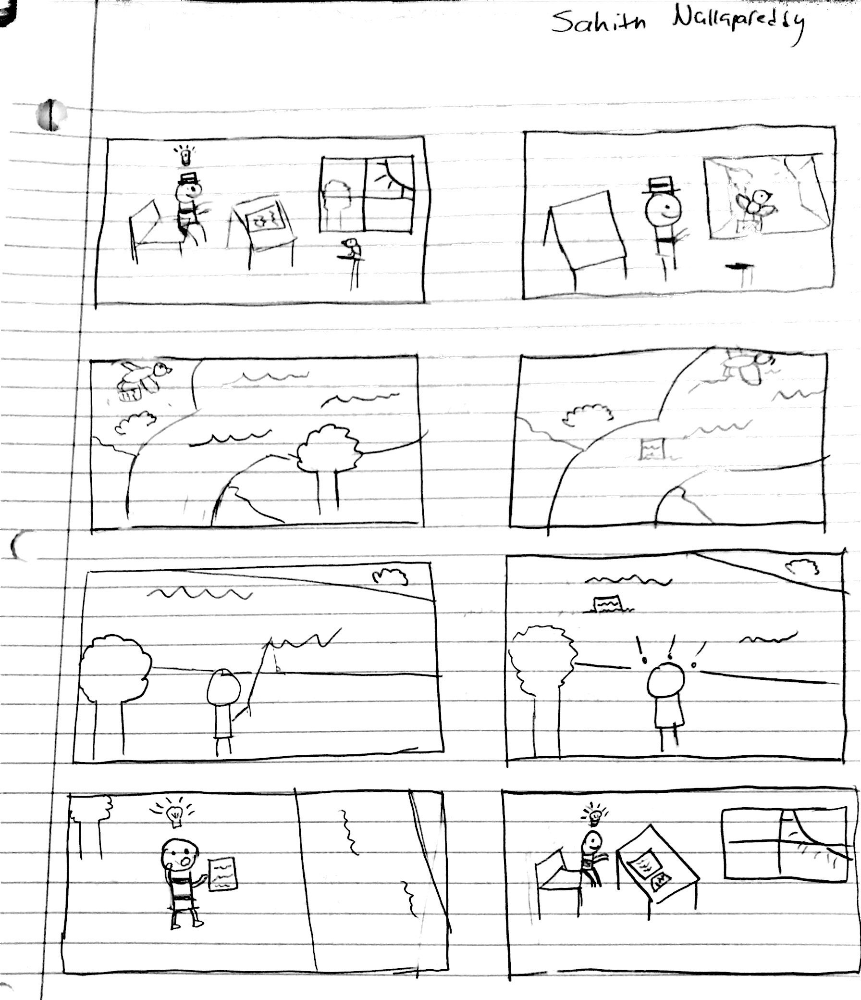

This was my graphic narrative. It feels like a long time ago doing this but it is still part of my
journey through this class. Here is the author's note to go with it:
The idea I was trying to represent here was about discourse and subject formation. Foucalt had a lot of
thought provoking ideas about discourse and one of them had to do with the idea of discourse being
circular. I thought of this in two ways, one being that discourse can represent power but also has the
ability to undermine and remove power and another being that adding to knowledge adds to the discourse
which in return can create more discussion leading to more discourse. I focused mostly on the second
one and tried to touch upon the idea of subject formation. Foucalt argues that the subject is produced
within discourse and that subject cannot exist outside of it. To demonstrate this, I thought about the
flow of knowledge and discourse as a river that flows and has different states depending on the place
and time. I wanted that to represent the flow of knowledge and the context it is in would represent the
time period and culture discourse belongs to. There is a person writing his own thoughts and ideas
which then adds to the discourse which flows down the river where another person finds it. The second
person’s features are blank because he has not been introduced to the discourse yet. Once he reads the
paper and gaines the knowledge, he has his own ideas and wants to contribute back to the discourse,
which gives him graphically features. I wanted the last panel to be almost the exact same as the first
to capture the cyclical nature of this flow that discourse would keep repeating and as more people are
introduced there will only be more discourse.
Additionally, I wanted to have one big pool that all the knowledge would start in and then be dispersed
similar to how water works with oceans or lakes being the biggest source and then flowing down into
other regions. Water has always been the starting place for human civilization so I wanted to draw that
parallel with knowledge and water. I liked the idea of a bird carrying the person’s idea because I
think the medium in which we transport ideas should not matter. In today’s world, we have everything
from many academic journals to social media like Twitter which all hold value in discourse. I think
even if the level of knowledge varies with the medium, the meaning and discourse are still added to.
The second person is fishing was to represent that they wanted to look for knowledge and find meaning
to feed their own desires.